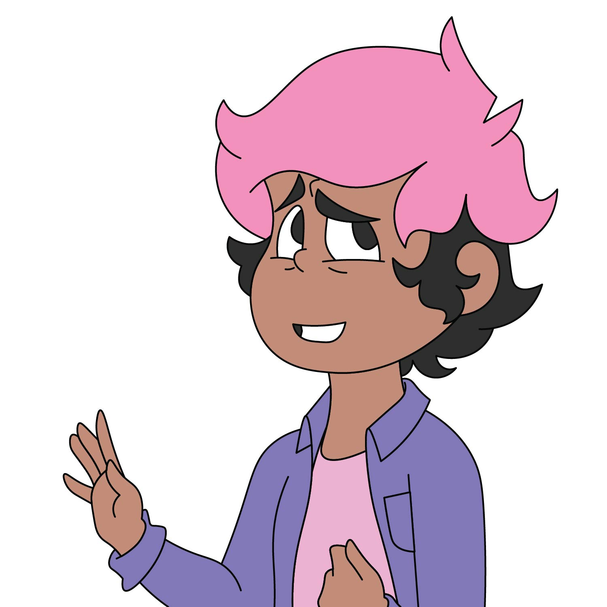

About Me

I’m Aly, and as an Alaskan Native, representation means a lot to me. Even with more nuanced and diverse representation for native tribes in modern media, PNW coastal tribes are highly unrepresented and often lumped in with mainland tribes despite the vast differences in culture. With my comics and animation, I aim to be a voice for the less represented, starting at home with the Tlingit and Haida. Someday, Disney’s “Brother Bear” and the PNW Coastal Native Barbie will not be the only representation we have in pop culture.